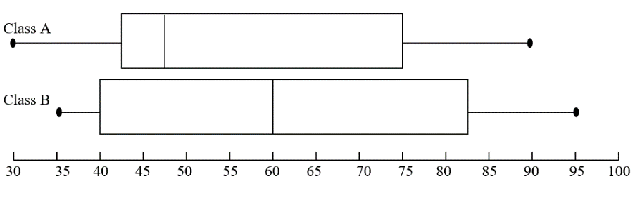
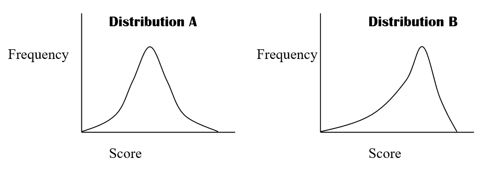
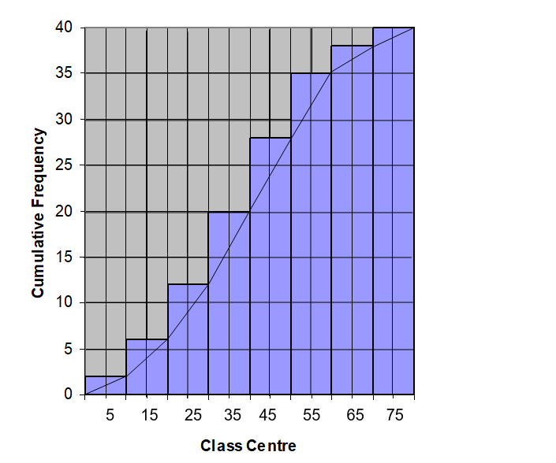
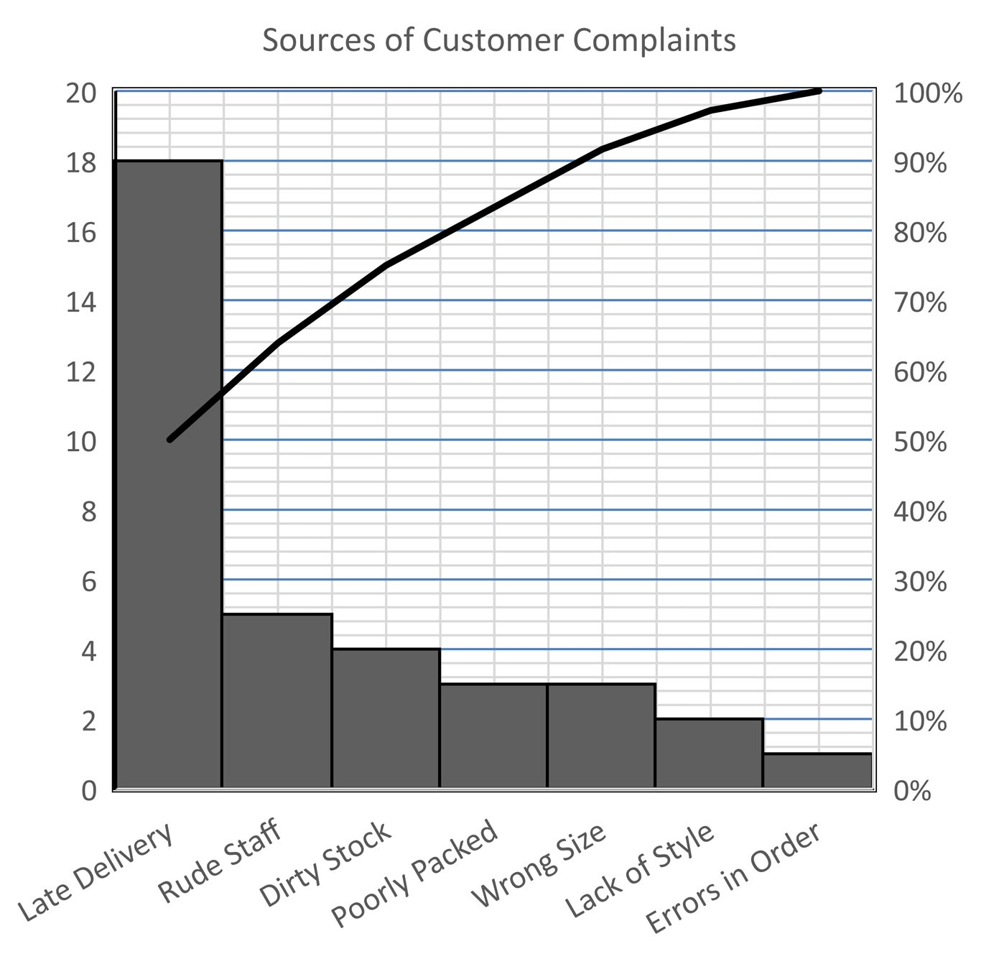
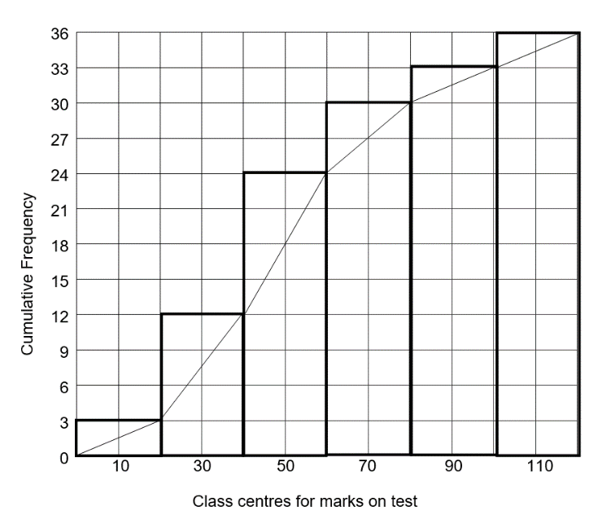
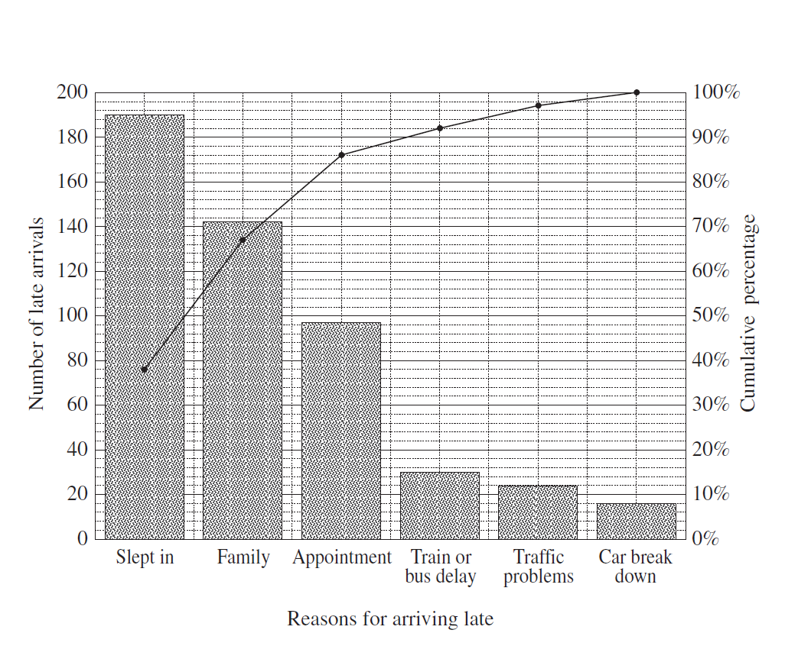

Data Analysis — Revision
HSC Practice Questions
Questions drawn from past NSW HSC examinations. Attempt each question before opening the solution.
Section 1
Data Classification
A survey asked the following question: "How many brothers do you have?" How would the responses be classified?
Show solution
"Number of brothers" is a count — it can only take whole number values. It is numerical and discrete.
Answer: CA survey asked the following question for students born in Australia: "Which State or Territory were you born in?" How would the responses be classified?
Show solution
State/Territory names are categories with no natural ordering (you can't say one state is "greater than" another).
Answer: B — Categorical, nominalThe eye colours of a sample of children were recorded. When analysing this data, which of the following could be found?
Show solution
Eye colour is categorical/nominal data. You cannot calculate a mean, median, or range for categories, but you can find the most common (mode).
Answer: C — ModeOn a school report, a student's record of completing homework is graded using the following codes: C = consistently, U = usually, S = sometimes, R = rarely, N = never. What type of data is this?
Show solution
The categories (C, U, S, R, N) have a clear natural order from most to least frequent. This is categorical ordinal data.
Answer: A — Categorical, ordinalWhich set of data is classified as categorical and nominal?
Show solution
Colours (blue, green, yellow) are categories with no natural ordering — they are categorical nominal. "Small, medium, large" has an order, so it would be ordinal.
Answer: AIn a survey, Reuben is asked to give some information about himself. The answers to which of the following questions would provide data which is quantitative and discrete?
Show solution
Quantitative data involves numbers. Discrete data are whole-number counts. "Number of siblings" is counted, so it is quantitative discrete.
Answer: DAlex works in an electrical store and asks each customer who purchases an item their postcode. Which type of data is Alex collecting?
Show solution
A postcode is a number but is not counted or measured — it identifies a location. It implies no natural ordering, so it is Categorical Nominal.
Answer: BLeica collects information from the members of her netball team in order to order uniforms. Which is an example of ordinal categorical data?
Show solution
Shirt sizes are labels (names), so they are categorical. They also imply an order (S < M < L < XL), so they are ordinal. Measurements (A and B) are quantitative continuous.
Answer: DSection 2
Sampling Methods & Statistical Inquiry
A high school has 100 students in each year group, Year 7 to Year 12. A survey is to be conducted to determine the average number of text messages sent per month by students at the school. Which of the following would provide the most representative sample for this survey?
Show solution
Option C is a stratified sample — it gives each year group equal representation, providing the most representative sample across the school.
Answer: CHandmade chocolates are checked for size and shape. Every 30th chocolate is sampled. Which term best describes this type of sampling?
Show solution
Selecting every nth item is systematic sampling.
Answer: D — SystematicA factory's quality control department has tested every 50th item produced for possible defects. What type of sampling has been used?
Show solution
Jamie wants to know how many songs were downloaded legally from the internet in the last 12 months by people aged 18–25 years. He has decided to conduct a statistical inquiry. After he collects the data, which of the following shows the best order for the steps he should take?
Show solution
After collecting data, the logical order is: Organise → Display → Analyse → Conclude.
Answer: DGreg needs to conduct a statistical inquiry into how much time people aged 18–25 years have spent accessing social media websites in the last two weeks. The steps of statistical inquiry (NOT in order) are:
| Letter | Step |
|---|---|
| A | Collect data |
| B | Organise and display data |
| C | Formulate question |
| D | Draw conclusions |
| E | Analyse data |
| F | Identify population |
(i) Using the letters A–F, list the steps in the most appropriate order for Greg to conduct his statistical inquiry. [2 marks]
(ii) A survey question reads: "Do you agree that social media is addictive?" Give TWO reasons why this survey question may be considered to be poorly designed. [2 marks]
Show solution
A study on the mobile phone usage of NSW high school students is to be conducted. Data is to be gathered using a questionnaire.
(i) Write a suitable question for this questionnaire that would provide discrete ordinal data. [1 mark]
(ii) An initial study is to be conducted using a stratified sample. Describe a method that could be used to obtain a representative stratified sample. [1 mark]
(iii) Who should be surveyed if it is decided to use a census for the study? [1 mark]
Show solution
A school of 1,200 students has the following year groups.
| School Year | 7 | 8 | 9 | 10 | 11 | 12 |
|---|---|---|---|---|---|---|
| No. of students | 250 | 260 | 200 | 190 | 160 | 140 |
Each year is approximately evenly split in gender. A stratified random sample of 60 students is to be chosen for a survey.
(a) How many Year 9 students should be included in the sample? [2 marks]
(b) How many Year 11 girls should be included in the sample? [2 marks]
Show solution
Basketball NSW conducts a survey of its players across the state using a sample of 250 players.
(a) If the Western Region has 8% of the basketball players in NSW, how many players from the Western Region should be included in the sample? [1 mark]
(b) The heights (cm) of the 22 players from the Southern Region are shown in the stem-and-leaf plot below. Draw a box-plot from this data. [3 marks]
| Stem | Leaf |
|---|---|
| 16 | 6 7 9 |
| 17 | 2 4 8 8 9 |
| 18 | 3 4 5 5 8 9 9 |
| 19 | 0 3 6 8 8 |
| 20 | 0 2 |
Draw the box-plot on a labelled number line on paper.
(c) Find the standard deviation of this sample to 2 decimal places. [1 mark]
Show solution
Section 3
Summary Statistics
A set of scores has the following five-number summary: lower extreme = 2, lower quartile = 5, median = 6, upper quartile = 8, upper extreme = 9. What is the range?
Show solution
Use the set of scores 1, 3, 3, 3, 4, 5, 7, 7, 12 to answer both parts.
(a) What is the range? (b) What are the median and the mode?
Show solution
The July sales prices for properties in a suburb were: $552,000, $595,000, $607,000, $607,000, $682,000 and $685,000. On 1 August, another property in the same suburb was sold for over one million dollars. If the property had been sold in July, what effect would it have had on the mean and median sale prices?
Show solution
The height of each student in a class was measured and it was found that the mean height was 160 cm. Two students were absent. When their heights were included in the data for the class, the mean height did not change. Which of the following heights are possible for the two absent students?
Show solution
The mean doesn't change only if the two heights average exactly 160 cm.
A: (155 + 162) ÷ 2 = 158.5 ✗ B: (152 + 167) ÷ 2 = 159.5 ✗ C: (149 + 171) ÷ 2 = 160 ✓ Answer: CThe heights of the players in a basketball team were recorded as 1.80 m, 1.83 m, 1.84 m, 1.86 m and 1.92 m. When a sixth player joined the team, the average height of the players increased by 1 centimetre. What was the height of the sixth player?
Show solution
Write down a set of six data values that has a range of 12, a mode of 12 and a minimum value of 12.
Show solution
The mean of a set of ten scores is 14. Another two scores are included and the new mean is 16. What is the mean of the two additional scores?
Show solution
The scores 16, 12, 11, 11, 6, 8, 10 have a range of:
Show solution
The scores below are the marks that Julio scored on 10 skills tests: 12, 14, 20, 20, 25, 32, 32, 34, 38, 40. The interquartile range of the scores is:
Show solution
The points scored by a rugby team over 14 games is shown in the stem-and-leaf plot below. What is the interquartile range of the scores?
| Stem | Leaf |
|---|---|
| 0 | 6 9 9 |
| 1 | 0 2 5 6 7 8 |
| 2 | 2 5 8 9 |
| 3 | 3 |
Show solution
Which is NOT true of the following set of scores?
| Score | Frequency |
|---|---|
| 12 | 3 |
| 13 | 9 |
| 14 | 5 |
| 15 | 5 |
| 16 | 3 |
| Total | 25 |
Show solution
Sven throws three darts fifteen times before and after a visit to the spa. The back-to-back stem-and-leaf plot shows his scores. Which statement is true?
| Before spa | Stem | After spa |
|---|---|---|
| 9 1 2 | 2 | 5 6 |
| 9 8 2 3 | 3 | 0 5 7 |
| 9 7 1 | 4 | 1 3 6 8 |
| 9 6 0 | 5 | 1 2 6 8 |
| 6 6 1 | 6 | 1 |
| 2 | 7 | |
| 8 | 2 |
Show solution
Which is correct for the set of data below, correct to the nearest whole number?
| Score (x) | Frequency (f) | fx |
|---|---|---|
| 12 | 3 | 36 |
| 13 | 5 | 65 |
| 14 | 7 | 98 |
| 15 | 8 | 120 |
| 16 | 2 | 32 |
| Total | Σf = 25 | Σfx = 351 |
Show solution
The marks from 10 people on a test are given below. 13, 16, 30, 21, 24, 18, 17, 23, 30 and 28. Which statement is correct?
Show solution
There are 48 people at a party. The ages of a sample of 8 people are: 15, 15, 16, 13, 14, 12, 17, 16. The standard deviation, correct to three significant figures, is:
Show solution
The table represents the total number of goals scored in a series of soccer matches.
| Goals scored | 0 | 1 | 2 | 3 | 4 | 5 | 6 |
|---|---|---|---|---|---|---|---|
| Frequency | 14 | 10 | 12 | 5 | 4 | 2 | 1 |
(a) What was the total number of matches played? [1 mark]
(b) Complete a five-number summary for this data. [2 marks]
(c) Draw an accurate box-plot of this data. [2 marks]
Draw the box-plot on a labelled number line on paper.
(d) Describe the shape of the distribution in terms of skew. [1 mark]
Show solution
The results of a class test (out of 50) are shown on the stem-and-leaf plot below (19 scores).
| Stem | Leaf |
|---|---|
| 1 | 8 |
| 2 | 0 2 2 3 4 |
| 3 | 0 2 2 2 4 5 7 8 |
| 4 | 3 5 6 7 9 |
(a) What is the median mark? [1 mark]
(b) What is the interquartile range? [2 marks]
(c) Determine if there are any outliers, giving calculations to justify your answer. [2 marks]
(d) What is the mean? [1 mark]
(e) What is the population standard deviation? [1 mark]
Show solution
A dot plot is shown below of the ages of 29 people at a party.
| Age | 12 | 13 | 14 | 15 | 16 | 17 | 18 |
|---|---|---|---|---|---|---|---|
| Frequency | 1 | 3 | 4 | 3 | 6 | 7 | 5 |
(a) Find the range of the ages. [1 mark]
(b) Find the interquartile range of the ages. [2 marks]
(c) Draw a box-and-whisker plot to represent the data. [2 marks]
Draw the box-plot on a labelled number line on paper.
Show solution
A group of 20 people are asked to rate a TV program on a scale from 1 to 10. The results are: 1, 6, 8, 6, 7, 5, 10, 7, 9, 5, 6, 8, 4, 4, 7, 7, 8, 7, 4, 8.
(a) Draw a dot plot of the data above. [2 marks]
Draw the dot plot on a number line labelled 1–10 on paper.
(b) Give the mode and the median of the data. [2 marks]
Show solution
The frequency distribution table below shows the ages of students in a club at school.
| Age | Frequency | Cumulative Frequency |
|---|---|---|
| 12 | 5 | |
| 13 | 14 | |
| 14 | 16 | |
| 15 | 17 | |
| 16 | 12 | |
| 17 | 14 | |
| 18 | 10 |
(a) Calculate the mean and standard deviation of the ages. [2 marks]
(b) Complete the cumulative frequency column in the table above. [1 mark]
(c) Find the median and interquartile range. [2 marks]
Show solution
Section 4
Outliers & Five-Number Summary
The heights, in centimetres, of 10 players on a basketball team are shown below:
170, 180, 185, 188, 192, 193, 193, 194, 196, 202
Is the height of the shortest player on the team considered an outlier? Justify your answer with calculations.
Show solution
The five-number summary of a dataset is given: Lowest score = 1, Q1 = 4, Median = 7, Q3 = 10, Highest score = 20. Is 20 an outlier? Justify your answer with calculations.
Show solution
A set of data has a lower quartile (Q1) of 10 and an upper quartile (Q3) of 16. What is the maximum possible range for this set of data if there are no outliers?
Show solution
Jamal surveyed eight households in his street and asked how many kilolitres (kL) of water they used in the last year. The results were:
175, 210, 184, 195, 201, 188, 170, 197
(i) Calculate the mean of this set of data. [1 mark]
(ii) What is the standard deviation of this set of data, correct to one decimal place? [1 mark]
Show solution
A cumulative frequency table for a data set is shown below:
| Score | Frequency | Cumulative frequency |
|---|---|---|
| 3 | 4 | 4 |
| 5 | 6 | 10 |
| 7 | 8 | 18 |
| 9 | 6 | 24 |
| 11 | 4 | 28 |
What is the interquartile range of this data set?
Show solution
Section 5
Statistical Displays
The results gained by the students in two classes A and B on a test are shown in the box plots below. Which statement is true?

Show solution
Which best describes the two distributions shown below?

Show solution
Distribution A is bell-shaped and symmetrical. Distribution B has a tail pointing downward (to lower values), which is negatively skewed.
Answer: CA cumulative frequency histogram and polygon is shown for a test out of 80 marks attempted by 40 students. The interquartile range is closest to:

Show solution
The Pareto Chart below was constructed to analyse the complaints received by a phone and online clothing retailer. What percentage of complaints related to Rude Staff?

Show solution
A Cumulative Frequency Histogram and Polygon for the marks on a test is shown below. By drawing lines on the graph, find the five-number summary for the data.

Show solution
An administrator has information about the heights of players in a basketball league. The cumulative frequency histogram below shows their heights.
(a) How many players have a height between 2.0 and 2.199 m? [1 mark]
(b) Complete a Cumulative Frequency Polygon on the diagram above (draw on paper or in the PDF). [2 marks]
(c) Use the polygon to obtain the values for a five-number summary for this data. [2 marks]
Show solution
A Pareto chart (below) was constructed from data collected about the reasons students at a school gave for being late.

(a) What percentage of students gave the reason "Family"? [1 mark]
(b) Which single reason accounted for approximately 20% of lateness? [1 mark]
(c) If they try to address the issues which account for at least 80% of the lateness, which issues should they target? [1 mark]